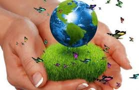
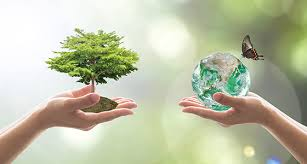

Día Internacional de la Madre Tierra 22 de abril
- "

- 

- 
Realizado por:
JOSELIN DEL CARMEN ZUÑIGA ESQUIVEL
4° Semestre Grupo: "E"
Especialidad
Programación
Submódulo
Desarrolla Aplicaciones Móviles
Docente:
Lic. Jóse Antonio Gómez Hernandez
4° Semestre Grupo: "E"
Programación
Desarrolla Aplicaciones Móviles
Lic. Jóse Antonio Gómez Hernandez
Celebramos el Dia Internacional de la madre Tierra para recordar que el planeta y sus ecosistemas nos dan la vida y el sustento. Con este dia, asumimos, ademas, la responsabilidad colectiva como nos recordaba la Declaracion de Rio de 1992, de fomentar esta armonia con la naturaleza y la madre Tierra. Este dia nos brinda tambien la oportunidad de concienciar a todos los habitantes del planeta acerca de los problemas que afectan a la Tierra y a las diferentes formas de la vida que en el se desarrollan.
El origen de este día, celebrado mundialmente (aunque no en todas partes), se encuentra en Estados Unidos, durante los 70. Y está asociado, sin duda, a un nombre: Gaylord Nelson. La historia cuenta (a pesar de los curiosos rumores sobre Lenin) que fue este político quién aprovechó un miércoles para organizar una manifestación en defensa del medio ambiente y el ecologismo. Un momento muy estudiado y que venía cociéndose desde la década de los 60 debido a la creciente irresponsabilidad ambiental del gobierno de Estados Unidos. Ya habían gérmenes plantados desde la comunidad científica y estudiantil. Ese miércoles los estudiantes y trabajadores se unieron en una manifestación pacífica que pretendía rendir homenaje y mostrar la preocupación colectiva sobre temas como el medio ambiente, la superpoblación o la conservación de la biodiversidad. Debido a la participación de dos mil universidades, diez mil escuelas y centenares de comunidades, el gobierno Estadounidense decidió crear Agencia de Protección Ambiental. Este solo fue el comienzo. Durante el 72, la cumbre de la Tierra, en Estocolmo, puso de manifiesto la manifiesta necesidad de una ley medioambiental internacional más comprometida. En los noventa, la celebración del Día de la Tierra ya estaba mucho más generalizada fuera de Estados Unidos y a día de hoy se celebra a nivel mundial. Es más, la plataforma Día de la Tierra trata de promover la concienciación medio ambiental mientras que numerosos colectivos y entidades participan a su manera. Por ejemplo, Google promueve el día con un doodle y una actividad especial mientras que en empresas como Apple, bastante comprometidas con el medio ambiente, aprovechan este día para mostrar su informe de compromiso medioambiental. Gracias a iniciativas como esta, el mundo ha ido tomando una concienciación medioambiental que antes de los 70 era completamente inexistente o muy vaga. Gracias a esto hemos puesto remedio y frenado algunos de los problemas más acuciantes.


La tierra que habitamos, así titula la Organización de Naciones Unidas (ONU) las actividades para la conmemoración del Día Internacional de la Tierra, este domingo 22 de abril. La Madre Tierra, como la llaman en muchas culturas, enfrenta quizá los años más difíciles desde sus inicios. Este día, menciona el comunicado de la ONU, será para recordar que el planeta y sus ecosistemas nos dan la vida y el sustento. Además, es necesario que la humanidad asuma la responsabilidad colectiva de fomentar la armonía con la naturaleza y la Madre Tierra. Importancia del ecosistema marino, fuente freepik.es Desde su formación hasta hoy, la Tierra cumple 4,600 millones de años aproximadamente, mencionan los científicos. En todo este tiempo, el planeta ha sido capaz de regenerarse y tomar la distribución de los continentes hasta como ahora los conocemos. Todo ese recorrido en el tiempo, ha superado una serie de cambios que impactaron en la fauna y flora. Actualmente, aunque se dan esfuerzos para revertir el cambio climático, desastres naturales provocados por el hombre o bien, parte de la dinámica de la naturaleza, los mismos son pocos para el impacto negativo que algunas actividades del ser humano causan al planeta. Aunque la población crece, este ritmo no se refleja en muchas especies de fauna y flora, que ven cada año reducir las especies y, algunas ya forman parte de la lista de extinción.
De forma resumida, estas son las 17 demandas: 1.ª Crear una Vicepresidencia de Sostenibilidad y Ministerio de Medio Ambiente. 2.ª Reforzar la Fiscalía Coordinadora de Medio Ambiente y Urbanismo y dotarla de más medios. 3.ª Reconocer y reforzar el papel de las organizaciones ambientales. 4.ª Establecer una Ley de Fiscalidad Ambiental que redistribuya la carga fiscal primando las buenas prácticas que promuevan el ahorro, la restauración ambiental y la creación de empleo ligado al medio ambiente. 5.ª Poner en marcha un plan ambicioso de mejora de la calidad del aire de ámbito estatal. 6.ª Prohibir de manera urgente el Bisfenol-A y otros disruptores endocrinos. 7.ª Prohibir el uso y abuso de animales con fines lúdicos o publicitarios a través de una Ley de Protección Animal. 8.ª Aprobar una Ley de Cambio Climático. 9.ª Realizar una auditoría energética de los costes reales del sistema como primer paso para poner en marcha una nueva política energética coherente que impulse el ahorro y la eficiencia energética, la producción descentralizada de energía renovable eliminando las subvenciones a los combustibles fósiles y acometiendo el cierre de las centrales nucleares tras 30 años de funcionamiento. 10.ª Aprobar una Ley de Movilidad Sostenible. 11.ª No construir más embalses ni trasvases. 12.ª Rediseñar una política agroalimentaria respetuosa con el medio ambiente. 13.ª No dar ni un paso atrás en la política de tolerancia cero contra la pesca ilegal —IUU—. 14.ª Apoyar a escala europea una política de Economía Circular ambiciosa que garantice una reducción del uso de recursos naturales por nuestra economía. 15.ª Dotar económicamente el Fondo para la Conservación de la Biodiversidad para garantizar el cumplimiento del Plan Estratégico para el Patrimonio Natural. 16.ª Derogar la modificación de la Ley de Costas para asegurar la conservación de los ecosistemas costeros amenazados. 17.ª Rechazar explícitamente el Tratado Transatlántico de Comercio e Inversiones (TTIP).
Celebramos el Dia Internacional de la madre Tierra para recordar que el planeta y sus ecosistemas nos dan la vida y el sustento. Con este dia, asumimos, ademas, la responsabilidad colectiva como nos recordaba la Declaracion de Rio de 1992, de fomentar esta armonia con la naturaleza y la madre Tierra. Este dia nos brinda tambien la oportunidad de concienciar a todos los habitantes del planeta acerca de los problemas que afectan a la Tierra y a las diferentes formas de la vida que en el se desarrollan.